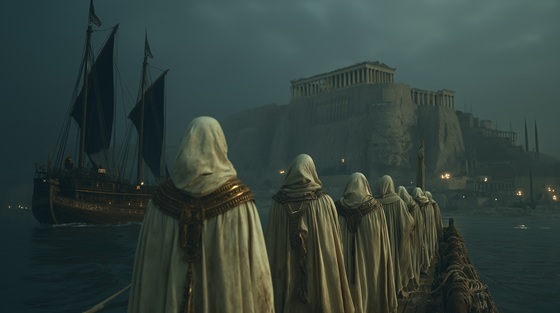

After the death of Minos’s son Androgeos, Athens was forced to send seven young men and seven young women every cycle as sacrificial tribute to Crete.
These innocents were thrown into the Labyrinth — a living offering to the Minotaur — to atone for crimes not their own.
"Tribute of the Innocent" captures the grief, fury, and helpless defiance of a people forced to feed their own children to a monster born of royal pride.
Tribute of the Innocent
We bore the chains, we bore the shame
We paid the price for kings in flame
Seven sons, seven daughters cry—
To feed the beast where heroes die
No god will hear, no throne will grieve—
The innocent are made to bleed
Tribute of the innocent, blood for the crown
We march to the dark, we kneel, we drown
The kings may feast, the tyrants reign—
But we shall burn away their shame
The black sails rise, the mothers wail
The ships are graves, the winds are pale
Through storm and curse, through endless night—
We send our children from the light
No dove returns, no tear unwept—
We pay the debt the kings have kept
Tribute of the innocent, blood for the crown
We march to the dark, we kneel, we drown
The kings may feast, the tyrants reign—
But we shall burn away their shame
The Labyrinth calls, the silence bleeds
The beast shall drink our broken seeds
Yet in the dark, a spark is sworn—
A blade shall rise from grief and scorn
O sons of dusk, O daughters torn
Your cries shall carve the coming storm
No tyrant's wall, no king’s decree—
Can chain the fire inside the sea
Tribute of the innocent, blood for the crown
But storms shall rise and kings shall drown
The gods may turn, the beasts may feast—
But from the ashes comes the beast
Tribute of blood, tribute of flame—
The innocent shall forge their name